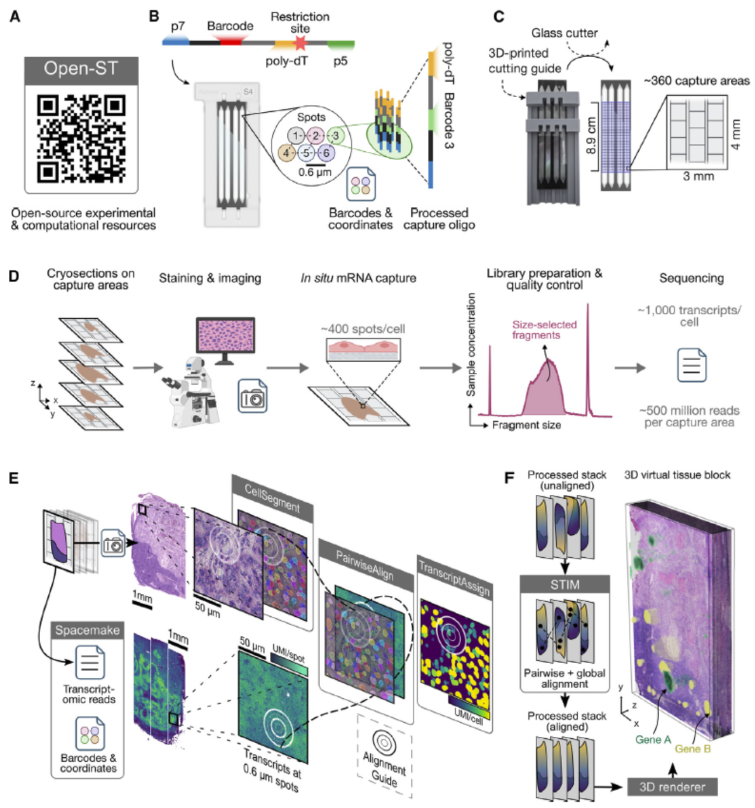
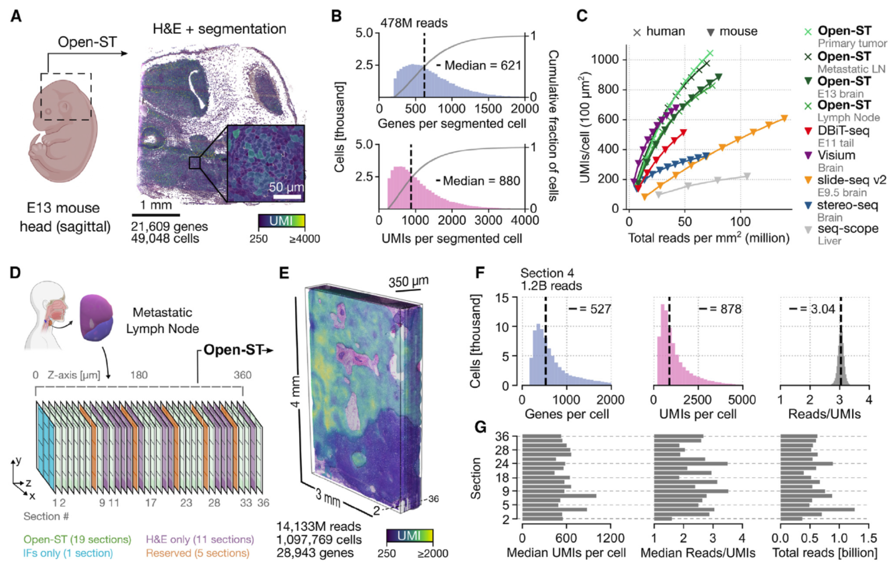
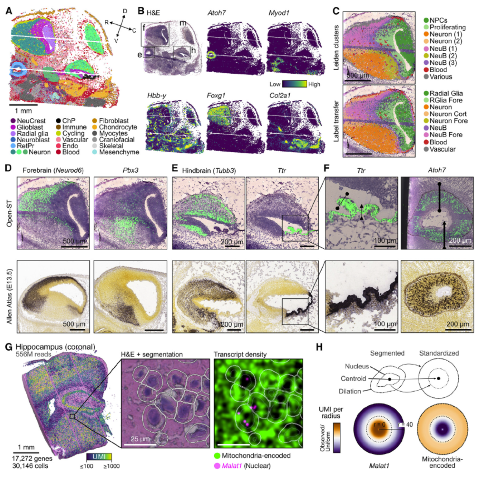

Open-ST：高分辨率3D空间转录组技术
1 引言
近年来，空间转录组学（Spatial Transcriptomics, ST）技术快速发展，它融合了组织学图像与转录组数据的优势，使研究者能够同时获取组织中基因表达和其空间位置的信息。然而，现有商业 ST 平台往往在以下几个方面存在局限：1. 高昂成本：如 Visium 或 Xenium 的每样本花费往往高达数百欧元；2. 分辨率限制：大多数平台的捕获间距在 10–100 μm；3. 缺乏三维重建能力；4. 封闭源代码和不可定制流程。
2024 年，Schott 等人[1]提出了一种开源的3D空间转录组解决方案——Open-ST，它是一个开源、模块化、成本可控的平台，具备如下特点：
- 亚细胞级分辨率（0.6 μm）；
- 支持三维组织重建；
- 全转录组测序兼容性；
- 低成本（捕获区域成本 < €130）；
- 开源软件栈支持从图像到单细胞数据集成与可视化。
2 方法原理与实验流程
2.1 利用 Flow Cell 构建空间条形码阵列
Open-ST 最核心的创新之一是对 Illumina NovaSeq S4 flow cell 的二次利用, 1. Patterned Flow Cell：flow cell 表面含有规则排列的纳米孔（spot 间距 0.6 μm），每个孔中固定一段寡核苷酸。2. 条形码测序（Barcode registration）：在贴片组织之前，先对 flow cell 进行 Read 1-only 测序，记录每个孔中的条形码序列与空间坐标。3. 构建空间坐标映射表，用于后续 RNA 捕获结果的定位。

2.2 样本贴附与文库构建
- 使用自定义 3D 打印导轨将 flow cell 切成小块（如 3×4 mm）。 2. 将组织切片直接贴附在 flow cell 表面（无需中间支架），并进行 H&E 染色。3. 使用混合缓冲液（包含 pepsin 与 SSC）进行透化与杂交。4. 捕获 RNA 后进行一步式逆转录与 PCR 扩增，文库构建无需磁珠清洗或多轮扩增步骤。
2.3 图像与表达数据整合
- H&E 图像使用 fine-tuned Cellpose 模型进行细胞分割（核 + 胞质区域）。2. Spacemake 工具用于将条形码定位信息与表达量整合。3. 利用 circular fiducials 在图像和空间点间进行自动配准，对齐精度达 1 μm。
2.4 三维组织重建
- 将多个连续切片进行配准（STIM 工具）。2. 构建交互式 “Virtual Tissue Block”，使用 3D 可视化工具展示 transcript intensity, gene clusters 等结构。4. 结果可导入 napari、ParaView、Blender 等工具进一步分析。

3 方法评估与性能表现
3.1 实验覆盖组织与细胞类型
| 物种/样本 | 应用内容 | 捕获量级 | 特殊亮点 |
|---|---|---|---|
| 小鼠 E13 胚胎头部 | 前后脑、视网膜空间谱系 | ~60,000 细胞，>20,000 基因 | 与 Allen Atlas 精度一致 |
| 成人鼠海马 | 亚细胞定位验证 | MALAT1 与线粒体转录本在核/胞质间定位精确 | |
| 人类 HNSCC 原发灶与淋巴结转移 | 肿瘤-免疫空间构型 | >1M 细胞, 850M UMI | 识别转移边界处新生物标志物 |
3.2 细胞分辨率与文库性能
- 平均每细胞可捕获 600–2,000 个转录本。2. 文库复杂度高，Reads-to-UMI 比接近 3。3. 与 Slide-seqV2、Visium 相比，在相同测序深度下具备更高捕获效率。4. 支持高通量：单人 3 天可制备 10–15 个文库。
3.3 亚细胞定位能力验证
在海马组织中核定位转录本 MALAT1 显著集中于核区域，线粒体基因则富集于胞质区域，不同细胞密度区域中也维持这种富集模式，验证其亚细胞稳定性。

4 应用展示与发现
4.1 空间结构驱动的生物标志物识别
在人类头颈癌转移性淋巴结中建立了跨 350 μm 深度的 3D 虚拟组织块，在肿瘤-淋巴边界处发现富集的巨噬细胞群与胆固醇合成信号，显示 Open-ST 能发现 2D 不可见的重要微结构。
4.2 空间细胞通信分析
通过 ligand-receptor 分析识别肿瘤原发灶中活跃的细胞通讯热点，发现这些通讯结构在转移灶中被打断，提示免疫逃逸机制。
5 与其他方法的比较
| 方法 | 分辨率 | 成本 | 是否开源 | 是否支持 3D |
|---|---|---|---|---|
| Open-ST | 0.6 μm | <€130 | ✅ | ✅ |
| 10X Visium | 55 μm | $$$ |
❌ | ❌ |
| Slide-seqV2 | 10 μm | $ |
✅ | ❌ |
| CosMx | 1 μm | $$$$ |
❌ | ❌ |
| StereoSeq | 0.5–0.7 μm | 不公开 | ❌ | ❌ |
Open-ST 是目前少数能以极高分辨率进行全转录组测序，并以开放工具链支持 3D 重建的平台之一。
6 总结与展望
Open-ST 通过对传统测序平台的再设计，为空间组学研究带来革新式解决方案。其开源、低成本、高灵活性的特性，使其特别适合：
- 探索肿瘤异质性与微环境互作；
- 构建发育过程中的三维表达图谱；
- 弥合 bulk RNA 与单细胞转录组之间的空间维度差距；
- 成为教育、资源有限实验室的入门选择。
其开源网站（https://rajewsky-lab.github.io/openst）已提供详细实验步骤、数据处理 pipeline 与演示数据，有望广泛落地应用。
今天小编为大家介绍了一个新的空间转录组技术，希望能给大家的研究思路带来一些新的可能！ 本公众号专注与单细胞、空间转录组、空间代谢组、空间蛋白质组以及宏基因组方向个性化分析和方案设计，欢迎大家交流咨询。后续我们还会更新更多空间转录组、空间蛋白质组、空间代谢组以及单细胞方面的内容，欢迎关注交流。